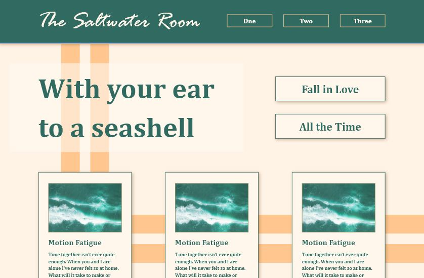

Full Portfolio
Click an image to view the full project.Landing Page Mockups
Various landing page mockups created as personal projects in order to utilize my skills in UI/UX and practice building for all different types of site content.
SBIT Redesign

Redesign for the Reynolds Community College School of Business and Industrial Trades. The mockup was created as a class project and the development was then completed as part of an internship.
Demopets

The bones of a virtual pet site created as part of my web design coursework. While not a functioning site, this project was meant to give the basic idea of what a new virtual pet game might look/act like.
CTE Reverse Career Fair

Materials created for the CTE Reverse Career Fair in 2022. This was mainly a booklet given to potential employers that attended the fair, but includes a flyer created for the signing day as well.
Wedding Site

Personal wedding site created alongside coursework for ART 116 at Brightpoint Community College. This is a static site created for desktop as the coursework did not yet include responsive design.
Graphic Design

Various graphic design pieces that don't warrant their own pages. This includes some logo work, typography, poster design, and more.
Animations

This page displays all of my animation coursework. Animation isn't my usual medium, but I wanted to include a place to display some of my bigger projects.